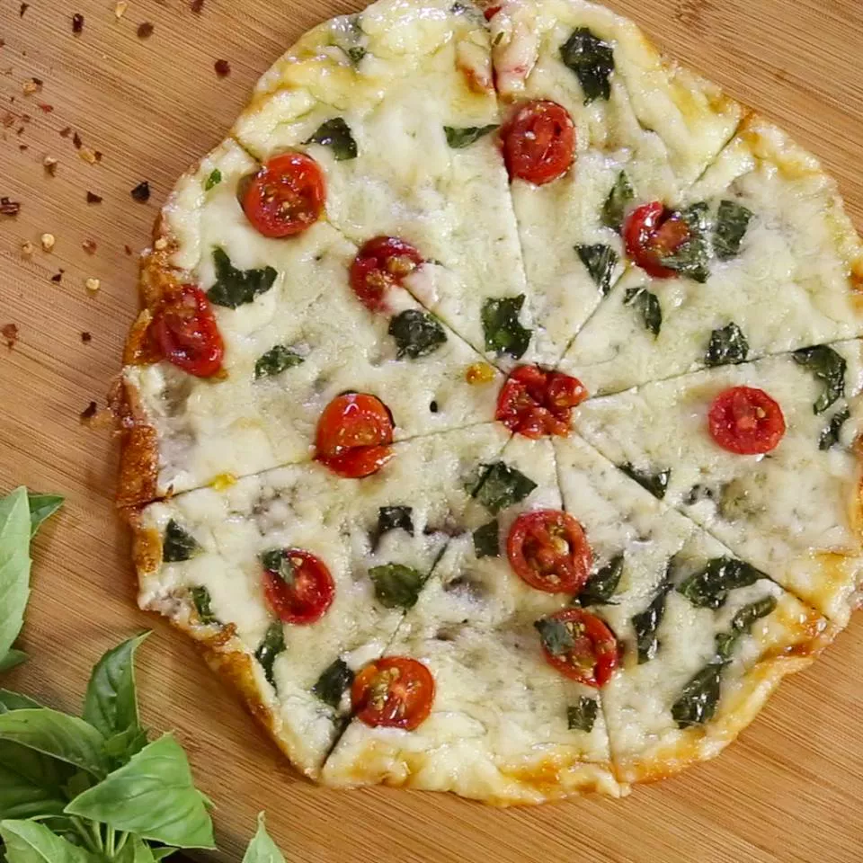

Pizza time !

Description
If you refrain from grain, but can't go without pizza...you've got to try this version with a 1-ingredient crust made just from cheese.
Ingredients
- 1/2 cups shredded part-skin mozzarella
- 5 cherry tomatoes
- 4 small fresh mozzarella
Steps
- Heat a 10-inch nin-stick skillet over medium-high heat.
- Arrange tomatoes slices,basil leaves, and fresh mozzarella slices on the melded cheese
- Remove skillet from heat and loosen pizza with a spatula